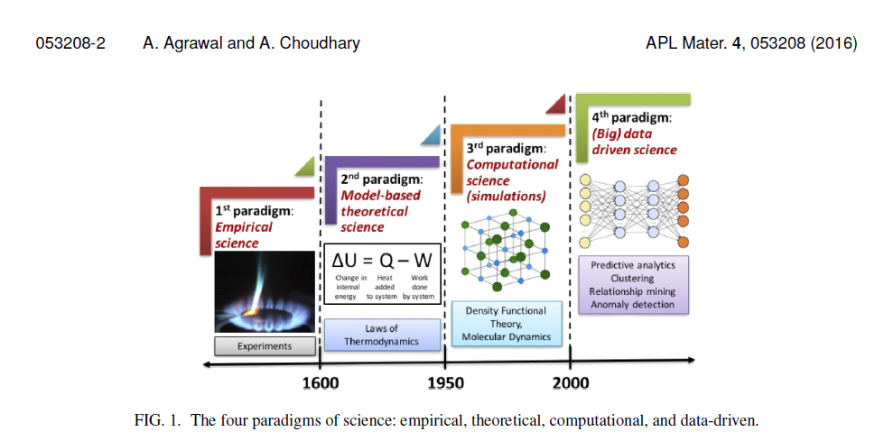

Introduction to Machine Learning#
Now that we have covered some of the basics of scientific Python programming (the first half of this workshop), we are ready to begin our journey into the world of Machine Learning. In this second half of the course, we will apply our Python programming skills to develop, train, and evaluate models that make intelligent predictions based on large datasets. We will also investigate how these models can be applied to several different problems in the materials science domain.
What is Machine Learning?#
Machine learning (often abbreviated as ML) is a sub-field of Artificial Intelligence that focuses on how data and computational processes can be applied to provide systems the ability to learn from experience without the need for explicit programming. Essentially, ML focuses on two things:
The development of computational models that make predictions, identify trends, etc.
The computational methods that can be applied to improve these models based on data.
Today, many scientific fields are achieving significant breakthroughs on some of their toughest problems, especially problems where a lot of data have been accumulated but there is lack of a robust theory to explain it. For example, the problem of protein folding was an area of intense research in the 2010s, until breakthroughs in ML-based approaches to predicting protein structure yielded record-breaking accuracy in the prediction of protein structure in the CASP (Critical Assessment of Structure Prediction) datasets. The most successful of these protein folding models, such as DeepMind’s AlphaFold, are still being used today to investigate the role of protein structure in diseases such as Alzheimer’s.
How has ML been applied to Materials Science?#
In addition to being successful in studying organic molecules, there is a growing interest in applying ML to the inorganic materials sciences, especially in the discovery of novel materials with desirable properties such as superconductivity, magnetism, or quantum topological properties. ML is also being used for the engineering of complex materials to be used in the next generation of batteries, transistors, solar panels, and turbines. Recent efforts in transitioning toward more data-driven practices in materials science have resulted in the creation of an entirely new field: Material Informatics. Some researchers have suggested that the birth of this new field may usher in an entirely new paradigm of materials research, as shown in the Figure below, from a review by Agrawal and Choudhary.

Types of Machine Learning Problems#
Machine learning encompasses a wide range of techniques, but can generally be categorized into three main types: supervised learning, unsupervised learning, and reinforcement learning.
Supervised Learning:#
In supervised learning, a predictive model is provided with a labeled dataset, where each data point is associated with a corresponding target or outcome variable. The goal is for the model to “learn” a function that can map input features to the correct output labels. This type of learning is commonly used for tasks such as classification (where the model categorizes data into predefined classes) and regression (where the model predicts a continuous numerical value) Supervised learning relies on the availability of labeled data which is usef to fit the model. The success of supervised learning depends on the quality and representativeness of the labeled examples provided.
Unsupervised Learning:#
Unsupervised learning, in contrast, deals with unlabeled data. Typically a computational procedute (i.e. an algorithm) is used to find patterns, structures, or relationships within the data without any predefined labels. Clustering is a popular unsupervised learning technique that groups similar data points together based on their inherent similarities or distances. Dimensionality reduction is another common application, where the algorithm aims to reduce the number of input features while preserving important information. Unsupervised learning can reveal hidden insights, discover anomalies, or aid in exploratory data analysis, making it useful when labeled data is scarce or unavailable.
Reinforcement Learning:#
Reinforcement learning involves an agent learning to interact with an environment in order to maximize its cumulative rewards. The agent takes actions in the environment and receives feedback or rewards based on its actions. The goal is to learn an optimal strategy or policy that maximizes the total expected reward over time. Reinforcement learning is often applied in sequential decision-making tasks, such as game playing or autonomous robotics, or sequential design problems. Through a trial-and-error process, the agent learns to navigate the environment and adapt its actions based on the received rewards and penalties. Reinforcement learning requires careful design of reward systems, exploration-exploitation trade-offs, and can involve complex optimization algorithms.
In this workshop, we will focus primarily on the first two types of machine learning, namely supervised learning and unsupervised learning. We will not cover reinforcement learning, as its applications tend to be very domain-specific in materials science.
Review Material#
In the following sections, we will do our best to give a (relatively) thorough overview of both the theory and applications of machine learning. Unfortunately, having a solid understanding of machine learning requires some basic background knowledge in the areas of statistics, linear algebra, and multivariate calculus. In the next two sub-sections, we give brief reviews of this background knowledge. If you already feel comfortable with your understanding of these subjects, you may not need to review them.